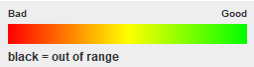
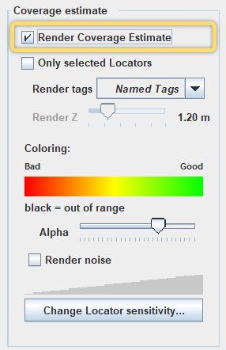
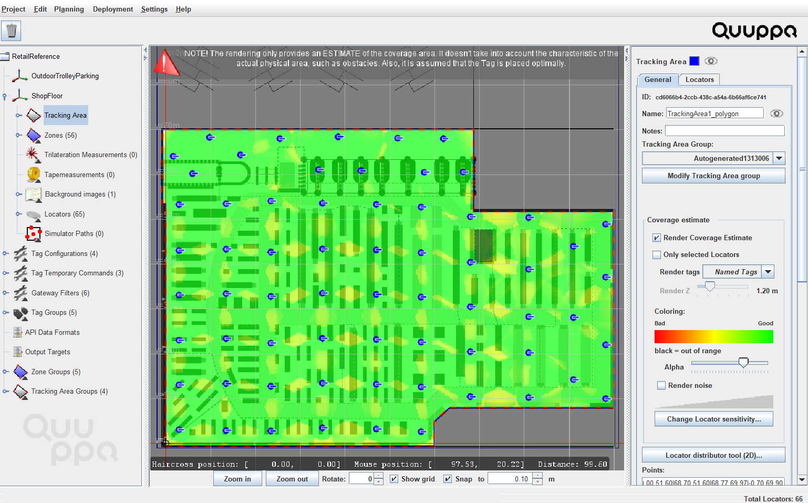
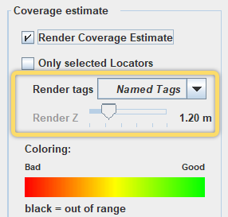
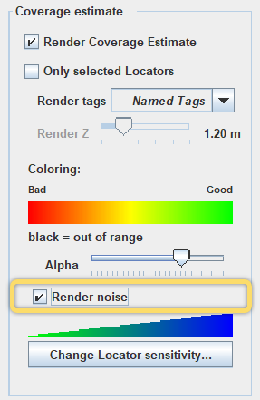
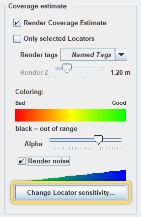

Apply Coverage Estimate
The coverage estimate tool allows you to visualise whether you have added enough Locators to produce the desired coverage for the tracking area. The tool can be used to render a coverage estimate for all of the Locators in the tracking area or for selected Locators only. Rendering the coverage for a selected group of Locators is particularly useful for large deployments with many Locators where the planning is often done in sections.
The coverage estimate tool is made up of two rendering options, with sliding colour scales, to help you assess the number and placement of and settings for Locators in your project: Render Coverage Estimate and Render noise.
The Render Coverage Estimate option uses three colours to show the level of coverage achieved by the selected Locators. For good coverage, you should aim for a greenish result.

- Red - Detection Zone: The system can recognise the tags and receive packets but is not able to calculate a location. For typical deployments, red coverage is not recommended, but it can be used for IoT Gateway solutions or if only presence detection is needed.
- Yellow - Low Resolution Zone: High accuracy measurement of the azimuthal angle. Allows for rough positioning, the accuracy of which can be improved by adding more Locators.
- Green- High Resolution Zone: High accuracy measurement of azimuthal and elevation angles. Allows for accurate positioning.
The Render noise option uses a scale from blue to green to indicate how many Locators can hear a tag at any given point. The blue colour on this scale means that tags can be heard by Locators that are so far away from the tag that they cannot reliably contribute to the positioning of this tag. This means that the tag is just creating "noise" for the Locators that are far away, effectively wasting system resources. To reduce unnecessary "noise", you can decrease the sensitivity of the Locator.
Follow these steps to render the coverage estimate for your project.
- Open your project in the QSP.
- In the QSP object tree on the left, select the tracking area that you want to use. You can find the tracking area either under the coordinate system or through the tracking area groups.
-
In the object info panel on the right, check the box for Render
Coverage Estimate. If you want to select only specific Locators
for your render estimate, check the Only selected Locators
box and select the Locators from the object tree or map.

-
Assess the render estimate in the QSP map view. For good coverage, aim to have
greenish coverage throughout the area. If needed, add Locators to the project or
move existing Locators in the tracking area.

Tip: A good rule of thumb to achieve good coverage is that the distance between Locators should be 2-4 times the installation height.Note: With the Quuppa system, the coverage level does not need to be uniform across the deployment. If your deployment has areas where high accuracy positioning is needed and other where proximity solutions would be enough, you can optimise the deployment accordingly with the help of the coverage estimate tool.The coverage estimate provides a couple of additional parameters that you can edit so that you can customise the visualisation to show what you want to see:
- Render Z: This tool is useful for 3D tracking areas, as it
enables running a render estimate for different heights within the
project. As the tag heights are already set in the tag groups, you
can use the drop-down menu to select the tag groups for which to
provide the render estimate.

- Alpha slider: This slider can be used to change the transparency of the render estimate. Sliding it to the left increases the transparency, which sliding to the right decreases transparency.
- Render Z: This tool is useful for 3D tracking areas, as it
enables running a render estimate for different heights within the
project. As the tag heights are already set in the tag groups, you
can use the drop-down menu to select the tag groups for which to
provide the render estimate.
-
Once the coverage looks good, check the noise rendering by checking the
Render noise box. Again, aim for a greenish coverage
throughout the area.

To optimise the "noise" level, use the Change Locator sensitivity button to adjust the Locator settings as needed.

- To switch off the rendering, uncheck the box for Render Coverage Estimate.